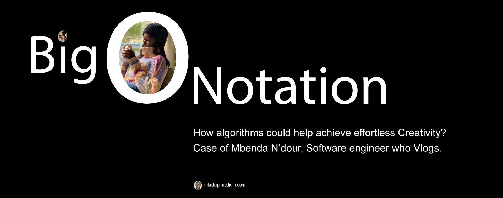

The Big O advice of Mbenda


When Mbenda advised you to master the Big O notation in her vlog tips for software engineers, She went to one of her favorite anime and found a scene of a character saying the Big O to put into her video just after she says Big O. She probably did it easily because she knows very well this anime but she surely spent a lot of time looking for this piece of video that could illustrate her vlog and makes it more fun. You can look at one example of these kinds of fun video illustrations that Mbenda does creatively by watching this trimmed video below
If you are empathic with Mbenda and willing to allow her to save time and to illustrate effortlessly her videos, she already shows you about what anime she cares about. They are just here
Your goal as a software engineer or aspiring one will be to take all episodes of these anime as the inputs of a speech-to-text algorithm. Applying the advice of Mbenda who tells you to take one and only language will be useful. For this exercise of building this system for Mbenda and other creative people, I would be advising you Python as a first-hand language because with python you already have a lot of modules like
Once the sound of the episodes is converted to text the second stage will be to tokenized the resulting text into words and sentences and store them into a searchable database that could be a simple SQL database like MySQL but you could also use high-end database solutions built for search engine like elastic search. What you should not forget about building up your database is that for this to be useful for editing vlogs, you should reference and index the timing of each word and sentence. I mean the start and the end time code of each word and sentence and the episode in which they are part.
Here are the two first step for building this anime search engine for mbenda but the last one is to build a video trimmer which will allow vlogs creators to cut the video portion she or he needs once she of he discover the interesting illustrative word or sentence
Of course, all of these subsystems are part of the Backend process but this solution will need a frontend that could allow searching content like in Google, and for going further with the development of such kind of system you could think of integration with video editing solutions like Adobe premiere, filmora ….
There are a lot of creative ways for building systems and platform that help edit video easily and some of these systems could leverage AI as I expose it in this article below
But remember that for you to succeed in building such kind of system you should be a good software engineer and take into account Mbenda’s advice that I could summarize with these bullet points
- Choose one and only one language
- Master data structures
- Big of Notation is very important you should learn how to estimate the execution time, memory space, and complexity of each algorithm in front of you.
- Choose on discipline, Backend or Frontend
- Coding is really hard and you should keep this in mind
PS: Sounds that I heard Mbenda Ndour saying that she may be offering a brand new line of Tshirt Labeled Coding is Hard or Programming is Hard. I was thinking to build and offer to Mbenda some creative T-shirt mockups to showcase this concept but Up until now, I have not enough time and maybe not the skillset for designing Highly creative T-shirt Designs. Here is what I was able to offer
This article is part of the Greyio Heat Experiment but is specially customized with care for Mbenda Ndour like these ones